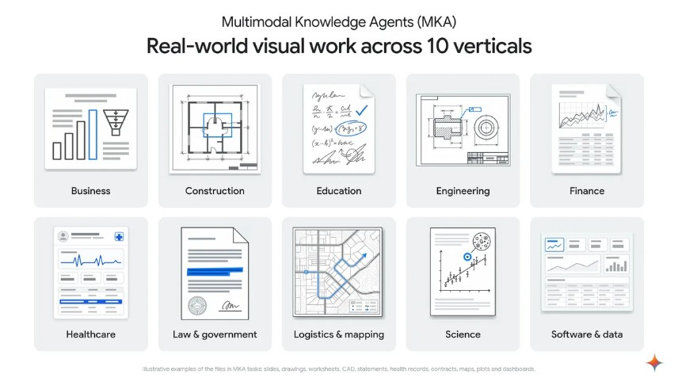

Multimodal Knowledge Agent (MKA) · 官方研究评测／公开样例集
MKA要求代理跨图纸、表格和文档交付成品，得分仍不等于整项工作通过
2026-11-10 · 近三日补充／11月10日公告，时区未明 · 采集 11-11 09:17Z

Google原图：十类评测领域与文件示意；非真实任务成品 ↗ 原始图证输入不止文字，输出也不止一段回答
MKA是Google与Artificial Analysis合作推出的研究评测，不是一款新的办公助手。它用两百项私有任务覆盖十个行业、八十三种职业，另外提供十项不重叠的公开样例。输入包括图纸、图表、扫描件和表格，代理需要组合信息，再提交可独立打开的成品。官方介绍将评分权重分成事实准确性百分之七十五、视觉设计百分之二十五。我们的判断是，这种设计能让团队检查模型是否真的看了页面，而不只提取文字；但行业覆盖广不等于每一种职业的任务分布都被充分代表，不能据此宣布普遍替代专业人员。
公开样例能展示任务结构，不能复现私有全榜
报告中的人力规划样例要求代理结合人员流动图、编制记录、规则与工作簿模板，制作部门排名表。这个例子说明视觉信息怎样进入后续计算，而不是装饰性地附在提示旁边。Hugging Face样例卡列出任务元信息、输入文件与评分准则的目录结构；本次读到了该卡与报告中的样例描述，但具体JSON链接未能打开，没有运行任何任务。产品团队可据此设计自己的小样本：先明确哪些关系只能从图上读出，再检查这些关系如何影响成品。样例目录可访问，不应被写成我们已经独立复现了私有两百题的成绩。
同样的工具预算，让完成方式可比较
Artificial Analysis说明，各模型使用Stirrup框架，在Linux沙箱中调用代码、搜索和图像查看工具，最多运行二百五十轮；另一个代理在独立环境中检查交付文件并逐条评分。主榜Climb WSR统计较难准则的加权满足率，不能直接理解成完整任务成功率。我们的判断是，评价办公代理时，应同时看哪些要求失败、输出是否能继续编辑，以及人要补多少步骤。同样的总分可能来自截然不同的问题：一种是排版小错，另一种是读错图纸尺寸。对于实际采购和接入，后者的代价可能远大于分数差别。
人评一致率与模型名次都有明确边界
技术报告的人机评分一致率为百分之九十六点二，但验证只涉及五十项任务，集中在较高权重准则；不能外推为所有排版细节都同样可靠。模型每题仅运行一次，置信区间不覆盖反复运行的波动。报告中前三模型的Climb分数差异在统计上不可区分，官网动态榜单又可能继续增加模型，因此本文不把当前名次当稳定结论。我们更愿意用同一任务重复运行，核查低分原因，再比较可接受成品的成本。十一月十日公告只有日期，本文保守标为近三日补充，所有结果归原作者报告，非本刊测试。
← 回到项目，继续翻页